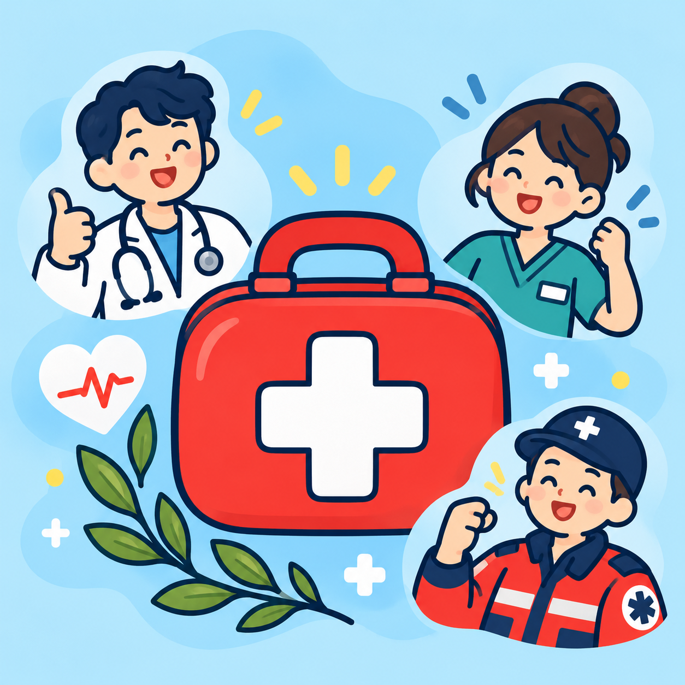

急症辨識
中風快速檢查
透過臉部、手臂與說話觀察，快速辨識可能的中風徵象。
簡單、可靠、隨時可用
醫二三以簡單的引導，協助您在需要時快速採取正確行動。

常用健康工具
透過臉部、手臂與說話觀察，快速辨識可能的中風徵象。
依序記錄睜眼、言語與動作反應。
了解 119 報案、救護車與 EMT 的送醫前協助。
我們會持續整理實用、容易使用的健康工具。
日常保健
計算 BMI，並認識飯前血糖與糖化血色素參考值。
適用 65 歲以上長者，或由家屬陪同代填。
認識急症
認識冠心症與腦中風的警訊，以及等救護車時可以做什麼。
量測與紀錄
輸入已量測的數值，整理體溫、脈搏、呼吸與血壓，協助您觀察並在需要時向醫護人員說明。
參考資料：衛生福利部國民健康署・血壓多少才算是高血壓？、成人生命徵象衛教資料及兒科生命徵象表（表格修訂日期：2013 年）。兒科參考值僅供資料對照，應由醫療人員配合清醒／睡眠、活動、發燒及臨床狀況判讀；若有疑慮，請勿以本卡延誤就醫。
就醫前資訊
急診會依病情危急程度安排優先順序，先處理最需要立即救治的病人，不是依到院先後看診。
可能等候時間：立即處理
可能等候時間：10 分鐘
可能等候時間：30 分鐘
可能等候時間：60 分鐘
可能等候時間：120 分鐘
先整理以下資訊，可幫助檢傷與醫護人員更快理解您的狀況。
急診會持續依病情重新安排順序。若狀況改變，請主動告知現場醫護人員。
無意識、呼吸困難、大量出血、持續胸痛或病情突然惡化，請立即撥打 119。
資料來源：衛生福利部中央健康保險署・檢傷分類民眾衛教版。實際等候時間可能依現場病情與醫療量能調整。
日常保健
平時留意體重與血糖，有助於及早發現健康風險。本頁提供參考值與計算工具，結果不能取代健康檢查或醫師診斷。
身體質量指數
BMI＝體重（公斤）÷ 身高（公尺）÷ 身高（公尺）。本工具適用 18 歲（含）以上成人；兒童及青少年的 BMI 需依年齡與性別判讀，請參考國健署的兒童與青少年建議值。
空腹血糖
飯前血糖是指空腹至少 8 小時（可以喝白開水）後量測的血糖值。下表為非懷孕成人的參考範圍，單位為 mg/dL。
HbA1c
糖化血色素（HbA1c）反映過去約 2～3 個月的平均血糖，抽血前不需要空腹。下表為非懷孕成人的參考範圍。
日常保健
依美國 CDC「STEADI」長者跌倒風險自我檢測設計，每題回答「是」或「否」即可。適用 65 歲以上長者，也可以由家屬或照顧者陪同代填。結果只能提醒風險，不能取代醫療人員的評估。
完整版依各題配分加總，也能看出哪些方面需要多留意。
內容參考：美國 CDC・STEADI Stay Independent 小冊子（Check Your Risk for Falling），題目依 CDC 原文自行翻譯；量表出自 Rubenstein 等人（J Safety Res, 2011;42(6):493-499）。快速版與「曾跌倒即視為風險較高」依 STEADI 三個關鍵問題。衛生福利部國民健康署・「防跌三步」守護長者安全、衛生福利部國民健康署・長者防跌專區。
認識急症
了解常見急症的警訊，以及等救護車時可以做什麼。本頁提供一般衛教資訊，不能用來自行診斷或排除疾病。
供應心臟血液的血管叫做冠狀動脈。冠狀動脈變窄或被血塊堵住時，心肌會缺氧，這就是冠心症。輕微時可能只在活動時胸悶，嚴重時會發生急性心肌梗塞，甚至猝死。心臟疾病是國人十大死因的第 2 名。
胸口悶痛，像被重物壓住，可能延伸到左手臂或下巴，常伴隨冒冷汗，多在活動時出現。
約三成心肌梗塞的人沒有典型胸痛，可能只有上腹悶痛，或覺得疲倦無力。糖尿病患者與長者特別要留意。
可能出現氣喘、背痛等不典型症狀。不要因為不是胸痛就忽略。
醫護人員會盡快做心電圖並抽血檢查。心肌梗塞初期，心電圖和抽血不一定看得出變化，所以第一次結果正常，也可能需要隔一段時間再檢查一次。這是為了避免漏掉病情，請耐心配合。
常見危險因子包括高血壓、糖尿病、高血脂、抽菸、年紀較大與家族史。慢性腎臟病、紅斑性狼瘡，以及長期使用類固醇的人也要特別注意。控制三高、戒菸並定期健康檢查，可以降低風險。
內容參考：台灣急診醫學通訊・急性冠心症（奇美醫院急診部，2018）、衛生福利部國民健康署・連日低溫 做好保暖降低心血管急症風險（2026）、衛生福利部國民健康署・冷颼颼 溫差大「心」警訊 FAST送醫（2022）、衛生福利部國民健康署・心血管疾病發作時，應大聲咳嗽才能救命？、衛生福利部・114 年死因統計。
腦中風是腦部血管突然出問題，使腦細胞缺氧受損。主要分成兩大類：
腦血管被血塊或硬化的血管壁堵住，血液送不到腦部。
腦血管破裂出血，血塊壓迫腦組織。
腦中風不只發生在長者，年輕人也可能因為腦血管瘤或先天的腦血管異常而中風。腦血管疾病是國人十大死因的第 4 名，台灣平均每 42 分鐘就有 1 人因此死亡。
嘴角歪斜、臉部左右不對稱。
雙手平舉，其中一側無力往下垂。
說話口齒不清、表達困難。
突然劇烈頭痛、突然眩暈或走路不穩，也可能是中風的警訊。中風快速檢查工具也可以請對方說「一」，觀察嘴型和聲音。
阻塞型中風及早送醫，有機會接受打通血管的治療，例如血栓溶解劑或取栓手術。醫師需要知道症狀從什麼時候開始，才能判斷適合哪些治療。越早到院，能選擇的治療越多。如果不清楚確切時間，請記下最後一次看到他正常的時間。
醫師通常會先安排腦部電腦斷層，最快分辨是阻塞還是出血。兩種中風的治療方向不同，所以要先確認是哪一種。
國健署列出 8 大危險因子：高血壓、糖尿病、膽固醇過高、心房顫動、運動量不足、體重過重、吸菸，以及腦中風家族史。符合其中任 3 項，就屬於腦中風高危險群。定期健康檢查、控制三高並維持健康的生活習慣，可以降低風險。
內容參考：衛生福利部國民健康署・預防中風關鍵5招 辨識徵兆分秒必爭（2026）、三軍總醫院神經外科部・腦中風、衛生福利部・114 年死因統計。
民眾版認識資訊
從發現緊急狀況、撥打 119，到院前救護與送醫，是多個環節接力完成的緊急醫療服務。
服務流程
緊急醫療救護服務的目標，是在患者送達醫療機構前提供適當的緊急救護。常見流程可分為以下幾個環節：
留意患者與現場情形；遇到緊急狀況，儘速撥打 119。
告知地點及患者狀況，依指揮中心派遣員提問提供資訊。
救護人員到場評估，並依規範及患者狀況提供適當處置。
將患者送往就近適當的醫療機構，並向醫療人員交接狀況。
救護與交通方式
遇到緊急狀況時，請先撥打 119，由指揮中心了解情況並派遣。非緊急的醫療轉送，則可向醫療團隊詢問合適安排。
用於緊急傷病救護。救護人員可在送達醫療機構前評估患者並提供緊急救護。
服務範圍包括轉診、非緊急醫療運送，也可能依救護指揮中心派遣執行運送；實際服務與配置依個案需求確認。
非緊急回診或已安排的醫療行程，可詢問醫療團隊是否適合親友接送、計程車、大眾運輸或其他交通協助。
到院前救護人員
救護技術員是依法受訓並取得相應資格的救護人員。依照資格、法規與救護作業程序，在緊急現場、送醫或轉診途中執行緊急救護，並與醫療機構交接患者狀況。
了解患者狀況、持續觀察變化，並依資格及作業程序提供適當救護。
在送醫過程中持續照護，協助患者安全抵達醫療機構。
將現場觀察、症狀變化及已採取的處置交接給醫療人員。
感謝您使用醫二三。歡迎透過以下平台，認識作者或追蹤專案近況。
醫二三的功能更新與上架紀錄。
使用醫二三前，請先了解以下事項。
醫二三提供一般健康資訊、初步觀察與資料整理功能，不構成醫療建議或診斷，也不會因使用本工具而建立醫病關係。
工具結果不能取代醫師、護理師、救護技術員或急診檢傷人員的專業判斷；檢查未發現異常，也不代表已排除疾病。
若出現無意識、呼吸困難、持續胸痛、大量出血、突然無力或說話困難等情形，請立即撥打 119，不要為了使用本工具而延誤求助。
本工具內容以台灣的緊急救護系統為準；在其他國家或地區，請撥打當地的緊急電話。
參考值與說明依各頁標示的資料來源整理，可能因資料更新、年齡或個別狀況而不完全適用。作者會盡力維持內容正確，但無法保證內容即時、完整或適用於每一位使用者。
引用資料的著作權歸原權利人所有，本專案僅整理重點並註明出處。
是否就醫、用藥或採取其他處置，請依專業人員的評估與指示決定。在法律允許的範圍內，作者不就使用或無法使用本工具所生的損害負賠償責任。
醫二三不設會員，也沒有後端資料庫。您輸入的評估內容與生命徵象只在您的裝置上處理，不會上傳或儲存到作者的伺服器；結果圖片由您的瀏覽器在本機產生並下載。
本工具僅在您的瀏覽器保存語言偏好。網站由 GitHub Pages 託管，GitHub 可能依其政策記錄基本連線資訊；點選外部連結（例如回報問題表單或支持我們）後，將適用該網站的隱私政策。
醫二三的程式碼、文字與插圖由魏啟軒創作，保留所有權利。歡迎個人使用本工具、分享網址及儲存自己的結果圖片；非營利衛教或教學場合也可直接展示使用。
其他重製、修改、散布、再授權或商業用途，請先透過「關於作者」頁的回報問題表單聯繫，取得書面同意。
最後更新：2026-11-03